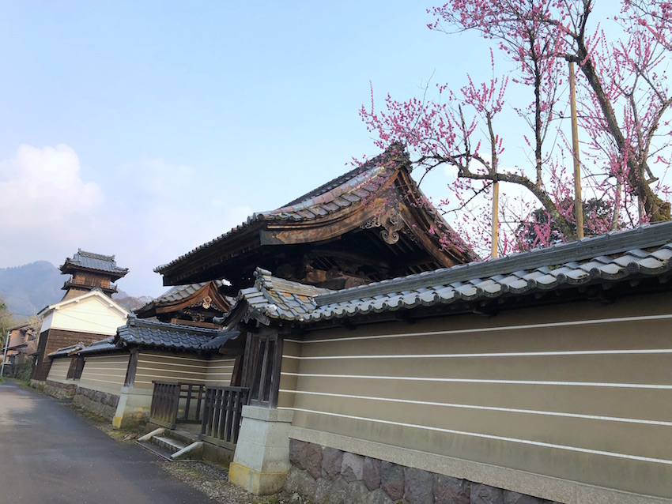
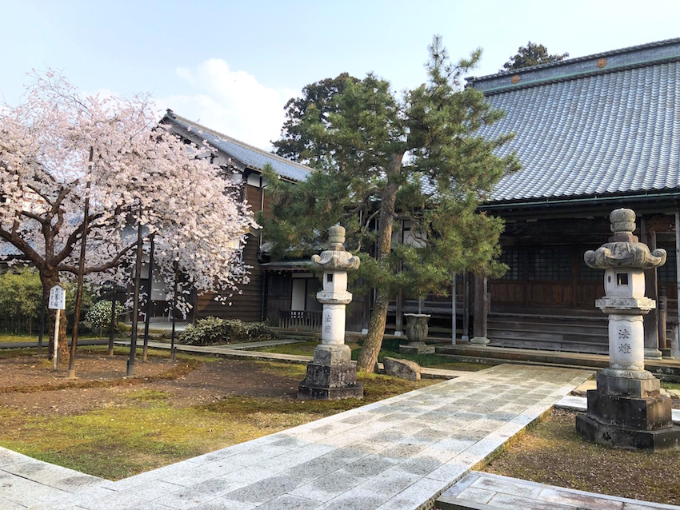

こ ： 苔の海 ヒイラギの巨木 城福寺
一言でいうと？
ヒイラギの大木が有名な鎌倉時代の寺院


福井のお殿様、越前松平家の歴代のお殿様が毎年花筐(かきょう)桜を見るために訪れたという枯山水(かれさんすい)庭園。
枯山水庭園とは、水を使わずに山水を表したお庭です。
昭和52年、国の名勝に指定されました。
平清盛の弟で“池大納言(いけのだいなごん)”とも呼ばれた平頼盛の長男で、越前守を務めていた平保盛(たいらのやすもり)により鎌倉時代に建てられたと伝わっています。
何が有名？
とても大きなヒイラギの木
推定樹齢300年、樹高12.6ｍ、幹周2.2ｍ。
市内を代表するヒイラギの大木として貴重なことから、
越前市指定天然記念物に指定されています。
お問い合わせ
090-7085-1340
手前のお庭は誰でも入ることができますが、ヒイラギの大木などがある中のお庭に入るには予約が必要なので注意！
※新型コロナウイルスの影響で変更の可能性があります。
拝観料 大人500円 学生300円
コロナの影響で中には入れませんでしたが、手前の桜の木は見ることができました！城福寺は同じ名前のお寺がもう一つあるので注意です！(一度間違えて行ってしまいました汗)落ち着いたらぜひヒイラギも見に行ってみたいと思います！